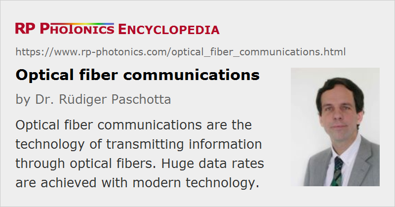

Optical Fiber Communications
Definition: the technology of transmitting information through optical fibers
More general terms: optical data transmission
German: optische Faserkommunikation, Kommunikation mit Glasfasern
Categories: fiber optics and waveguides, lightwave communications
How to cite the article; suggest additional literature
Author: Dr. Rüdiger Paschotta
Optical fibers can be used to transmit light and thus information over long distances. Fiber-based systems have largely replaced radio transmitter systems for long-haul optical data transmission. They are widely used for telephony, but also for Internet traffic, long high-speed local area networks (LANs), cable TV (CATV), and increasingly also for shorter distances within buildings. In most cases, silica fibers are used, except for very short distances, where plastic optical fibers can be advantageous.
Compared with systems based on electrical cables, the approach of optical fiber communications (lightwave communications) has advantages, the most important of which are:
- The capacity of fibers for data transmission is huge: a single silica fiber can carry hundreds of thousands of telephone channels, utilizing only a small part of the theoretical capacity. In the last 30 years, the progress concerning transmission capacities of fiber links has been significantly faster than e.g. the progress in the speed or storage capacity of computers.
- The losses for light propagating in fibers are amazingly small: ≈ 0.2 dB/km for modern single-mode silica fibers, so that many tens of kilometers can be bridged without amplifying the signals.
- A large number of channels can be reamplified in a single fiber amplifier, if required for very large transmission distances.
- Due to the huge transmission rate achievable, the cost per transported bit can be extremely low.
- Compared with electrical cables, fiber-optic cables are very lightweight.
- Fiber-optic cables are immune to problems that arise with electrical cables, such as ground loops or electromagnetic interference (EMI). Such issues are important, for example, for data links in industrial environments.
Mostly due to their very high data transmission capacity, fiber-optic transmission systems can achieve a much lower cost than systems based on coaxial copper cables, if high data rates are needed. For low data rates, where their full transmission capacity cannot be utilized, fiber-optic systems may have less of an economic advantage, or may even be more expensive (not due to the fibers, but the additional transceivers). The primary reason, however, for the still widespread use of copper cables for the “last mile” (the connection to the homes and offices) is simply that copper cables are already laid out, whereas new digging operations would be required to lay down additional fiber cables.
Fiber communications are already extensively used within metropolitan areas (metro fiber links), and even fiber to the home (FTTH) spreads more and more – particularly in Japan, where private Internet users can already obtain affordable Internet connections with data rates of 100 Mbit/s – well above the performance of current ADSL systems, which use electrical telephone lines. In other countries, one often tries to squeeze out higher transmission capacities from existing copper cables, e.g. with the technique of vectoring, in order to avoid the cost of laying down fiber cables to the premises. This, however, is more and more seen only as a temporary solution, which cannot satisfy further growth of bandwidth demand.
It is also possible to transmit analog signals through fibers; that technology is called radio and microwave over fiber.
Telecom Windows
Optical fiber communications typically operate in a wavelength region corresponding to one of the following “telecom windows”:
- The first window at 800–900 nm was originally used. GaAs/AlGaAs-based laser diodes and light-emitting diodes (LEDs) served as transmitters, and silicon photodiodes were suitable for the receivers. However, the fiber losses are relatively high in this region, and fiber amplifiers are not well developed for this spectral region. Therefore, the first telecom window is suitable only for short-distance transmission.
- The second telecom window utilizes wavelengths around 1.3 μm, where the loss of silica fibers is much lower and the fibers' chromatic dispersion is very weak, so that dispersive broadening is minimized. This window was originally used for long-haul transmission. However, fiber amplifiers for 1.3 μm (based on, e.g. on praseodymium-doped glass) are not as good as their 1.5-μm counterparts based on erbium. Also, low dispersion is not necessarily ideal for long-haul transmission, as it can increase the effect of optical nonlinearities.
- The third telecom window, which is now very widely used, utilizes wavelengths around 1.5 μm. The losses of silica fibers are lowest in this region, and erbium-doped fiber amplifiers are available which offer very high performance. Fiber dispersion is usually anomalous but can be tailored with great flexibility (→ dispersion-shifted fibers).
The second and third telecom windows are further subdivided into the following wavelength bands:
| Band | Description | Wavelength range |
|---|---|---|
| O band | original | 1260–1360 nm |
| E band | extended | 1360–1460 nm |
| S band | short wavelengths | 1460–1530 nm |
| C band | conventional (“erbium window”) | 1530–1565 nm |
| L band | long wavelengths | 1565–1625 nm |
| U band | ultralong wavelengths | 1625–1675 nm |
The second and third telecom windows were originally separated by a pronounced loss peak around 1.4 μm, but they can effectively be joined with advanced fibers with low OH content which do not exhibit this peak.
System Design
The simplest type of fiber-optic communication system is a fiber-optic link providing a point-to-point connection with a single data channel. Such a link essentially contains a transmitter for sending the information optically, a transmission fiber for transmitting the light over some distance, and a receiver. The transmission fiber may be equipped with additional components such as fiber amplifiers for regenerating the optical power or dispersion compensators for counteracting the effects of chromatic dispersion. The article on fiber-optic links gives more details.
A typical channel capacity for long-haul transmission for somewhat older systems is 2.5 or 10 Gbit/s; advanced systems offer 40, 100 or 160 Gbit/s or even more, and experimental systems have been demonstrated around 1 Tbit/s in one channel. The transmission capacity can be further multiplied by simultaneously using several, dozens or even hundreds of different wavelength channels (coarse or dense wavelength division multiplexing). Overall transmission capacities of many dozens of Tbit/s can be reached that way. The main challenges are to suppress channel cross-talk via nonlinearities, to balance the channel powers (e.g. with gain-flattened fiber amplifiers), and to simplify the systems. Another approach is time division multiplexing, where several input channels are combined by nesting in the time domain, and solitons are often used to ensure that the sent ultrashort pulses stay cleanly separated even at small pulse-to-pulse spacings. Finally, one can employ space division multiplexing where different spatial channels are used – either with multi-core fibers or with multimode (few-mode) fibers.
Another important development is that of systems which link many different stations with a sophisticated fiber-optic network. This approach can be very flexible and powerful, but also raises a number of non-trivial technical issues, such as the need for adding or dropping wavelength channels, ideally in a fully reconfigurable manner, or to constantly readjust the connection topology so as to obtain optimum performance, or to properly handle faults so as to minimize their impact on the overall system performance. As many different concepts (e.g. concerning topologies, modulation formats, dispersion management, nonlinear management, and software) and new types of devices (senders, receivers, fibers, fiber components, electronic circuits) are constantly being developed, it is not clear so far which kind of system will dominate the future of optical fiber communications.
For a discussion of aspects such as bit error rates and power penalties, see the article on optical data transmission.
Transmission Capacity of Optical Fibers
Within the last 30 years, the transmission capacity of optical fibers has been increased enormously. The rise in available transmission bandwidth per fiber is even significantly faster than e.g. the increase in storage capacity of electronic memory chips, or in the increase in computation power of microprocessors.
The transmission capacity of a fiber depends on the fiber length. The longer a fiber is, the more detrimental certain effects such intermodal or chromatic dispersion are, and the lower is the achievable transmission rate.
For short distances of a few hundred meters or less (e.g. within storage area networks), it is often more convenient to utilize multimode fibers, as these are cheaper to install (for example, due to their large core areas, they are easier to splice). Depending on the transmitter technology and fiber length, they achieve data rates between a few hundred Mbit/s and ≈ 10 Gbit/s.
Single-mode fibers are typically used for longer distances of a few kilometers or more. Currently used commercial telecom systems typically transmit between 10 Gbit/s and 160 Gbit/s per data channel over distances of ten kilometers or more. The required total capacity is usually obtained by transmitting many channels with slightly different wavelengths through fibers; this is called wavelength division multiplexing (WDM). Total data rates can be many dozens of Tbit/s or even >100 Tbit/s, sufficient for transmitting many millions of telephone channels simultaneously. Even such a huge capacity does by far not reach the physical limit of an optical fiber. In addition, note that a fiber-optic cable can contain multiple fibers; it is also possible to utilize multi-core fibers, where multiple fiber cores are contained in a single fiber. Alternatively, space division multiplexing can also be realized with multimode fibers, using multiple-input multiple-output receiver technology.
In conclusion, there should be no concern that technical limitations to fiber-optic data transmission could become severe in the foreseeable future. On the contrary, the fact that data transmission capacities can evolve faster than e.g. data storage and computational power, has inspired some people to predict that any transmission limitations will soon become obsolete, and large computation and storage facilities within high-capacity data networks will be extensively used, in a similar way as it has become common to use electrical power from many power stations within a large power grid. Such developments may be more severely limited by software and security issues than by the limitations of data transmission.
Key Components for Optical Fiber Communications
Optical fiber communication systems rely on a number of key components:
- optical transmitters, based mostly on semiconductor lasers (often VCSELs), fiber lasers, and optical modulators
- optical receivers, mostly based on photodiodes (often avalanche photodiodes)
- optical fibers with optimized properties concerning losses, guiding properties, dispersion, and nonlinearities
- dispersion-compensating modules
- semiconductor and fiber amplifiers (mostly erbium-doped fiber amplifiers, sometimes Raman amplifiers) for maintaining sufficient signal powers over long lengths of fibers, or as preamplifiers before signal detection
- optical filters (e.g. based on fiber Bragg gratings) and couplers
- optical switches and multiplexers (e.g. based on arrayed waveguide gratings); for example, optical add/drop multiplexers (OADMs) allow wavelength channels to be added or dropped in a WDM system
- electrically controlled optical switches
- devices for signal regeneration (electronic or optical regenerators), clock recovery and the like
- various kinds of electronics e.g. for signal processing and monitoring
- computers and software to control the system operation
In many cases, optical and electronic components for fiber communications are combined on photonic integrated circuits. Further progress in this technological area will help optical fiber communications to be extended to private households (→ fiber to the home) and small offices.
Suppliers
The RP Photonics Buyer's Guide contains 97 suppliers for optical fiber communication systems and devices. Among them:
Questions and Comments from Users
Here you can submit questions and comments. As far as they get accepted by the author, they will appear above this paragraph together with the author’s answer. The author will decide on acceptance based on certain criteria. Essentially, the issue must be of sufficiently broad interest.
Please do not enter personal data here; we would otherwise delete it soon. (See also our privacy declaration.) If you wish to receive personal feedback or consultancy from the author, please contact him e.g. via e-mail.
By submitting the information, you give your consent to the potential publication of your inputs on our website according to our rules. (If you later retract your consent, we will delete those inputs.) As your inputs are first reviewed by the author, they may be published with some delay.
Bibliography
| [1] | N. A. Olsson, “Lightwave systems with optical amplifiers”, J. Lightwave Technol. LT-7, 1071 (1989) |
| [2] | D. O. Caplan, “Laser communication transmitter and receiver design”, J. Opt. Fiber Commun. Rep. 4, 225 (2007), doi:10.1007/s10297-006-0079-z |
| [3] | R.-J. Essiambre et al., “Capacity limits of optical fiber networks”, J. Lightwave Technol. 28 (4), 662 (2010), doi:10.1109/JLT.2009.2039464 |
| [4] | P. J. Winzer, D. T. Neilson and A. R. Chraplyvy, “Fiber-optic transmission and networking: the previous 20 and the next 20 years”, Opt. Express 26 (18), 24190 (2018), doi:10.1364/OE.26.024190 |
| [5] | International Telecommunication Union (ITU), http://www.itu.int/home/index.html |
| [6] | G. P. Agrawal, Fiber-Optic Communication Systems, John Wiley & Sons, New York (2002) |
| [7] | H. J. R. Dutton, Understanding Optical Communications, http://www.freeinfosociety.com/media/pdf/5475.pdf, IBM Redbooks |
| [8] | Illustrated fiber optic glossary, http://www.fiber-optics.info/glossary-a.htm |
| [9] | R. Paschotta, tutorial on "Passive Fiber Optics" |
See also: fibers, fiber cables, telecom fibers, silica fibers, erbium-doped fiber amplifiers, optical data transmission, radio and microwave over fiber, wavelength division multiplexing, time division multiplexing, space division multiplexing, fiber-optic links, fiber-optic networks, multi-core fibers, quantum cryptography, fiber to the home, free-space optical communications
and other articles in the categories fiber optics and waveguides, lightwave communications

This encyclopedia is authored by Dr. Rüdiger Paschotta, the founder and executive of RP Photonics Consulting GmbH. How about a tailored training course from this distinguished expert at your location? Contact RP Photonics to find out how his technical consulting services (e.g. product designs, problem solving, independent evaluations, training) and software could become very valuable for your business!
|  |
If you like this page, please share the link with your friends and colleagues, e.g. via social media:
These sharing buttons are implemented in a privacy-friendly way!